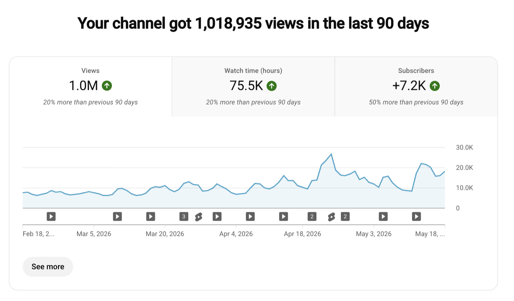
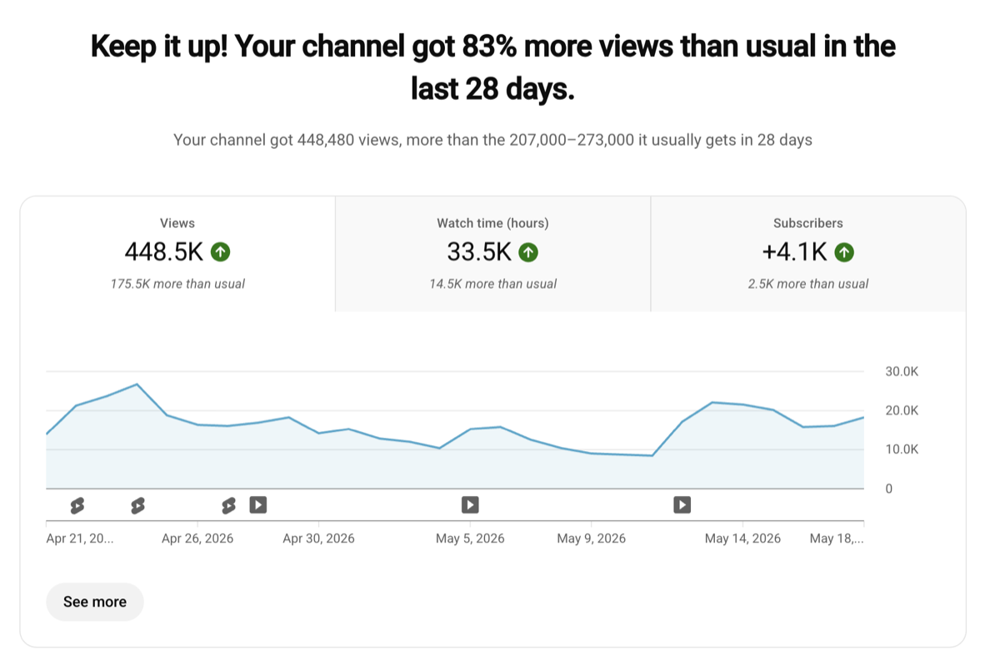
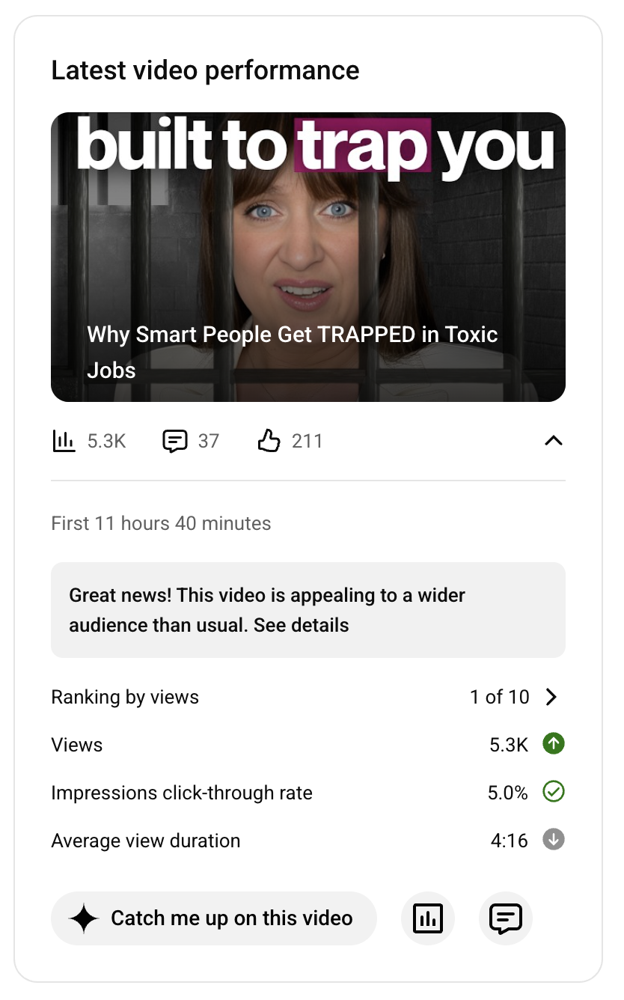

Case study
From 10+ Hours a Week to About One
How Jennifer reduced the time she spent managing edits, improved her channel’s performance, and increased publishing from two videos a month to four.


28 days: April 21 to May 18, 2026, compared with what her channel usually gets, according to YouTube Studio.
Her results are shown as a case study, not a guarantee of future performance.
Before
“My editing process was a nightmare… I was spending more than 10 hours a week preparing editing instructions, reviewing videos, and cycling through multiple rounds of revisions.”
After
“I’m now spending an hour max each week, and each video is getting better and better.”
Read Jennifer’s full words
“Before I started working with Tyron, my editing process was a nightmare. It got so bad that I almost stopped making videos! My prior agency’s turnaround time was +2 weeks, the quality was degrading over time, and I was spending more than 10 hours a week preparing editing instructions, reviewing videos, and cycling through multiple rounds of revisions when instructions weren’t followed.”
“To keep going, I needed to find an editing partner who would not only elevate the quality of my videos but who would free up my time.”
“Working with Tyron, the impact was immediate. He instantly elevated the quality of my channel. The first thing I noticed was the AVD lift in videos. More meaningfully, the increased quality has helped me reach larger audiences, increasing my average views per video and driving revenue.”
“If you’re an Educational Creator who wants to stop thinking about editing, produce top tier videos, and produce content that engages and converts, you seriously need to hire Tyron. You will not regret it.”

Time back
About One Hour a Week
Jennifer says she now spends about an hour a week managing edits, compared with more than 10 hours before.
- Prepared a new product launch
- Grew her email list by thousands
- Wrote a 100-page ebook and audiobook
- Increased publishing from two videos a month to four
Apply in two minutes. I’ll review your channel, publishing rhythm, and current editing setup.
These are Jennifer’s own numbers and words. Views and channel performance also depend on topic, title, thumbnail, audience demand, and distribution.
More creators, in their words
“If you don’t have enough time to actually grow your channel or business the way you want to, working with Tyron will be a night and day difference. You’ll go from stressing about your next upload to being videos ahead of your schedule.”
“With my previous editor I couldn’t rely on work getting completed on time and deadlines would be missed often. With Tyron he is lightning quick and I get V1 and changes made super fast. Would recommend.”
“Tyron did a fantastic job editing my video. He was quick to implement feedback, communicated clearly, and delivered everything on time. I will happily work with him again and recommend him to anyone looking for a skilled video editor.”